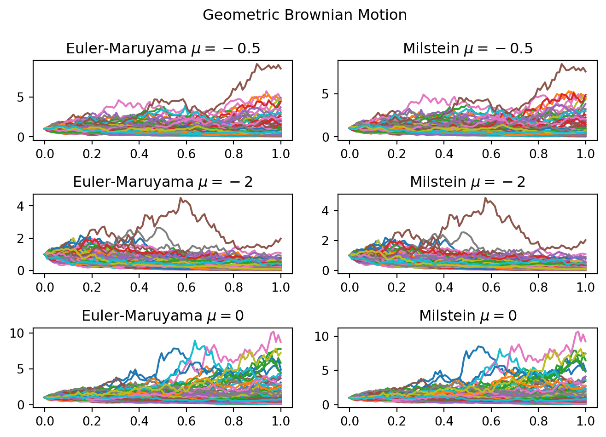
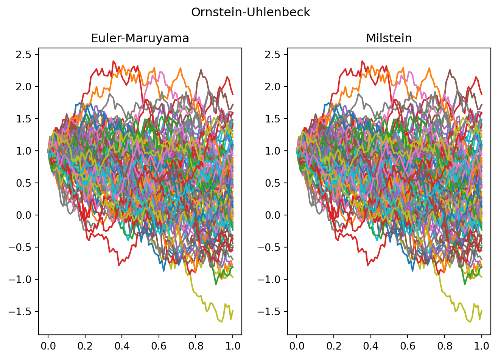
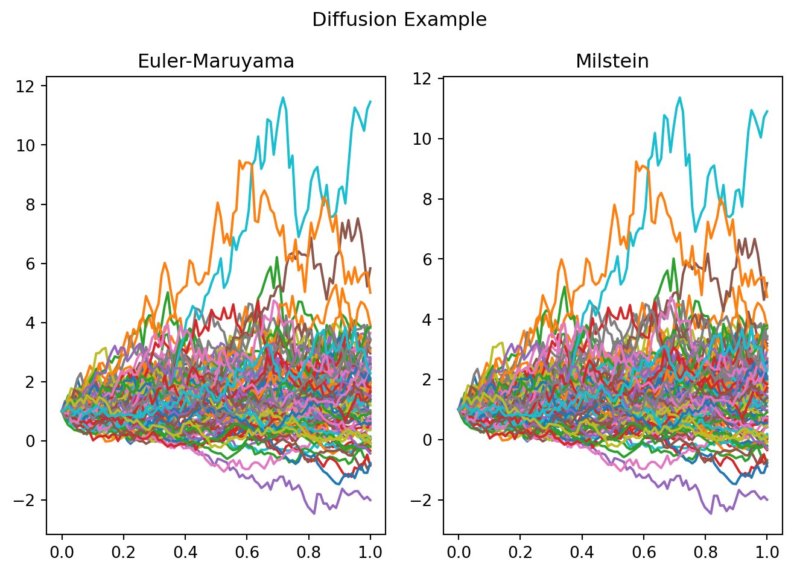

import numpy as np
import matplotlib.pyplot as plt
class BrownianMotion:
def __init__(self, start, end, increments):
self.increments = increments
self.delta = (end -start)/increments
self.samples = np.cumsum(np.r_[0, np.random.default_rng().normal(0, np.sqrt(self.delta), increments -1)])
def milstein(self, initial, volatility, dVolatility, drift):
integral = np.zeros(len(self.samples))
integral[0] = initial
for i in range(1, len(self.samples)):
prev = integral[i-1]
increment = self.samples[i] - self.samples[i-1]
try:
integral[i] = prev + volatility(prev)*increment + drift(prev)*self.delta +(1/2)*(volatility(prev)*dVolatility(prev)*(increment**2 - self.delta))
except FloatingPointError:
return integral[:i]
return integral
def euler_maruyama(self, initial, volatility, dVolatility, drift):
integral = np.zeros(len(self.samples))
integral[0] = initial
for i in range(1, len(self.samples)):
prev = integral[i-1]
increment = self.samples[i] - self.samples[i-1]
try:
integral[i] = prev + volatility(prev)*increment + drift(prev)*self.delta
except FloatingPointError:
return integral[:i]
return integral
def riemann(self, fn):
return np.cumsum(self.delta*fn(self.samples[:-1]))
def ito(self, fn):
return np.cumsum([ fn(i*self.delta, self.samples[i])*(self.samples[i+1] - self.samples[i]) for i in range(len(self.samples) -1) ])
paths = 100
def geometric_brownian_motion():
fig, axs = plt.subplots(3, 2)
x_axis = np.linspace(0, 1, 100)
fig.suptitle('Geometric Brownian Motion')
for i, mu in enumerate([-1/2, -2, 0]):
volatility = lambda x: x
dVolatility = lambda _: 1
drift = lambda x: x*(mu + 1/2)
for _ in range(paths):
bm = BrownianMotion(0, 1, 100)
euler_maruyama = bm.euler_maruyama(1, volatility, dVolatility, drift)
milstein = bm.milstein(1, volatility, dVolatility, drift)
axs[i, 0].plot(x_axis, euler_maruyama)
axs[i, 1].plot(x_axis, milstein)
axs[i, 0].set_title(f'Euler-Maruyama $\mu={mu}$')
axs[i, 1].set_title(f'Milstein $\mu={mu}$')
plt.tight_layout()
plt.show()
def ornstein_uhlenbeck():
fig, axs = plt.subplots(1, 2)
x_axis = np.linspace(0, 1, 100)
fig.suptitle('Ornstein-Uhlenbeck')
for _ in range(paths):
bm = BrownianMotion(0, 1, 100)
volatility = lambda x: 1
dVolatility = lambda _: 0
drift = lambda x: -x
euler_maruyama = bm.euler_maruyama(1, volatility, dVolatility, drift)
milstein = bm.milstein(1, volatility, dVolatility, drift)
axs[0].plot(x_axis, euler_maruyama)
axs[1].plot(x_axis, milstein)
axs[0].set_title(f'Euler-Maruyama')
axs[1].set_title(f'Milstein')
plt.tight_layout()
plt.show()
import sympy as sp
def diffusion_example():
from sympy.abc import x
volatility = sp.sqrt(1 + x**2)
dVolatility = sp.diff(volatility, x)
volatility, dVolatility = sp.lambdify(x, volatility), sp.lambdify(x, dVolatility)
drift = lambda x: np.sin(x)
fig, axs = plt.subplots(1, 2)
x_axis = np.linspace(0, 1, 100)
fig.suptitle('Diffusion Example')
for _ in range(paths):
bm = BrownianMotion(0, 1, 100)
euler_maruyama = bm.euler_maruyama(1, volatility, dVolatility, drift)
milstein = bm.milstein(1, volatility, dVolatility, drift)
axs[0].plot(x_axis, euler_maruyama)
axs[1].plot(x_axis, milstein)
axs[0].set_title(f'Euler-Maruyama')
axs[1].set_title(f'Milstein')
plt.tight_layout()
geometric_brownian_motion()
ornstein_uhlenbeck()
diffusion_example()

